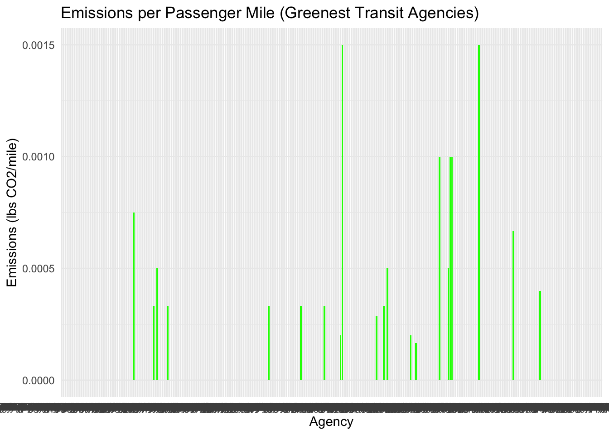
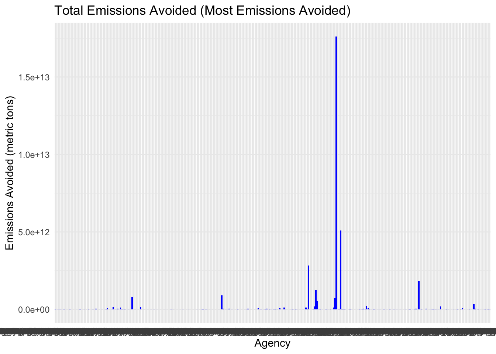

Mini-Project #02: Identifying Environmentally Responsible US Public Transit Systems
Author
Chenbin Wu
Press Release: ‘Greenest’ Transit Agency of the Year Award
Executive Summary:
New York, NY – March 26, 2025 – In efforts to recognize transit agencies demonstrating exceptional efficiency and sustainability, Green Transit Alliance for Investigation of Variance (GTA IV) is proud to announce the winners of the ‘Greenest’ Transit Agencies awards. These awards are based on an in-dept analysis of public transit data, evaluating agencies across key performance metrics including fuel efficiency, emissions reduction, and operational effectiveness.
Appendix: Analysis and Methodology
Introduction:
This appendix outlines the methodology and metrics used to identify the ‘Greenest’ Transit Agency of the Year Award winners. The selection process involves a detailed review of several key factors such as fuel consumption, emissions per mile, and total operational emissions across various transit systems.
Data Collection and Analysis:
Data was collected from the following sources: - Agency reports and annual performance reviews. - Publicly available transit data sets, including the National Transit Database. - Customer satisfaction surveys and feedback from various transit agencies.
Data was collected using the U.S. Energy Information Administration’s website. The primary data metrics were based on emissions per MWh of electricity produced, and the total generation capacity was cross-checked with state-level reports.
As you can see below, the effective emissions per MWh and total state-wide generation capacity are shown.
Show the code
ensure_package(scales)ensure_package(DT)EIA_SEP_REPORT |>select(-abbreviation) |>arrange(desc(CO2_MWh)) |>mutate(CO2_MWh =number(CO2_MWh, big.mark=","), electricity_price_MWh =dollar(electricity_price_MWh), generation_MWh =number(generation_MWh, big.mark=",")) |>rename(`Pounds of CO2 Emitted per MWh of Electricity Produced`=CO2_MWh, `Primary Source of Electricity Generation`=primary_source, `Average Retail Price for 1000 kWh`=electricity_price_MWh, `Total Generation Capacity (MWh)`= generation_MWh, State=state) |>datatable()
The following exploratory questions helped analyze the environmental impact of each state’s electricity mix:
Analysis of SEP Data
1. Which state has the most expensive retail electricity?
- Hawaii leads with the highest electricity cost of $386/MWh.
3. On average, how many pounds of CO2 are emitted per MWh of electricity produced in the US?
- The weighted average CO2 emissions per MWh for the U.S. is 805.37 lbs.
4. What is the rarest primary energy source in the US? What is the associated cost of electricity and where is it used?
- Petroleum is the rarest energy source used, particularly in Hawaii, with a cost of $386/MWh.
state electricity_price_MWh primary_source
1 Hawaii 386 Petroleum
5. My home state, Texas, has a reputation as being the home of “dirty fossil fuels” while NY has a reputation as a leader in clean energy. How many times cleaner is NY’s energy mix than that of Texas?
- New York’s energy mix is 1.64 times cleaner than Texas’s.
Show the code
ny_co2 <- EIA_SEP_REPORT |>filter(state =="New York") |>pull(CO2_MWh)tx_co2 <- EIA_SEP_REPORT |>filter(state =="Texas") |>pull(CO2_MWh)# Calculate how many times cleaner NY is than TXcleanliness_ratio <- tx_co2 / ny_co2cleanliness_ratio
[1] 1.637931
Analysis of Public Transit Data:
Public transit data was extracted from the National Transit Database (NTD), which includes energy consumption and passenger trip statistics.
# A tibble: 1 × 2
State total_miles
<chr> <dbl>
1 NH 3749892
5. Are all states represented in this data?
- While all 50 states are represented in the data, some states are missing abbreviations. 21 states are missing abbreviations.
Show the code
states_in_data <-unique(NTD_SERVICE$State)missing_states <-setdiff(state.name, states_in_data)# Optionally, also check for missing state abbreviationsmissing_abbr <-setdiff(state.abb, unique(NTD_SERVICE$State))missing_states
The data analysis involves merging the NTD public transit data with the energy data to assess the environmental impact of each transit agency’s fuel consumption. Each agency is then scored based on their emissions per mile and overall energy consumption, identifying the most sustainable transit systems.
Show the code
# Step 1: Join the tables. Join NTD_SERVICE with NTD_ENERGY by State and Modecombined_data <- NTD_SERVICE |>left_join(NTD_ENERGY, by =c("NTD ID"="NTD ID", "Agency"="Agency Name")) |>left_join(EIA_SEP_REPORT, by =c("State"="state"))# Step 2: Align fuel sourcesbined_data <- combined_data |>mutate(Fuel_Type =case_when(`Bio-Diesel`>0~"Bio-Diesel",`Bunker Fuel`>0~"Bunker Fuel",`C Natural Gas`>0~"C Natural Gas",`Diesel Fuel`>0~"Diesel Fuel",`Electric Battery`>0~"Electric Battery",`Electric Propulsion`>0~"Electric Propulsion", Ethanol >0~"Ethanol", Methonal >0~"Methonal", Gasoline >0~"Gasoline", Hydrogen >0~"Hydrogen",`Liquified Nat Gas`>0~"Liquified Nat Gas",`Liquified Petroleum Gas`>0~"Liquified Petroleum Gas",TRUE~"Other"# If no fuel source is present, categorize it as "Other" ))# Step 3: Calculate CO2 emissionscombined_data <- bined_data |>mutate(emissions_per_MWh =case_when( Fuel_Type =="Coal"~1.925, Fuel_Type =="Natural Gas"~1.180, Fuel_Type =="Hydroelectric"~0, Fuel_Type =="Wind"~0, Fuel_Type =="Solar"~0, Fuel_Type =="Electric Battery"~0.02, Fuel_Type =="Electric Propulsion"~0.01, TRUE~0 ),energy_per_mile =case_when( Fuel_Type =="Coal"~0.25, Fuel_Type =="Natural Gas"~0.20, Fuel_Type =="Hydroelectric"~0, Fuel_Type =="Wind"~0, Fuel_Type =="Solar"~0, Fuel_Type =="Electric Battery"~0.15, Fuel_Type =="Electric Propulsion"~0.10, TRUE~0 ),total_emissions = emissions_per_MWh * energy_per_mile * MILES )# Output the final tablefinal_table <- combined_data |>select(Agency, Mode, State, Fuel_Type, emissions_per_MWh, total_emissions)
# A tibble: 233 × 8
# Groups: Agency [233]
Agency State total_emissions total_UPT total_miles emissions_per_UPT
<chr> <chr> <dbl> <dbl> <dbl> <dbl>
1 Academy Lines,… NJ 0 1064165 44972754 0
2 Alternativa de… PR 0 3732115 15671639 0
3 Ann Arbor Area… MI 0 18722260 94480960 0
4 Arlington Coun… VA 0 2097034 5273946 0
5 Athens-Clarke … GA 0 1186787 4197292 0
6 Atlanta-Region… GA 0 1690548 55477910 0
7 Beaver County … PA 0 923424 7243688 0
8 Ben Franklin T… WA 0 9535131 72976146 0
9 Berkshire Regi… MA 0 1019928 6109646 0
10 Birmingham-Jef… AL 0 5387286 27996114 0
# ℹ 223 more rows
# ℹ 2 more variables: emissions_per_mile <dbl>, agency_size <chr>
Awards
1. Greenest Transit Agency (lowest emissions per UPT) Award: This award is based on the agency with the lowest emissions per UPT, emphasizing efficiency in reducing emissions per passenger.
# A tibble: 301 × 8
# Groups: Agency [301]
Agency State total_emissions total_UPT total_miles emissions_per_UPT
<chr> <chr> <dbl> <dbl> <dbl> <dbl>
1 Academy Lines,… NJ 0 1064165 44972754 0
2 Ada County Hig… ID 0 130715 5076885 0
3 Adirondack Tra… NY 0 362745 31065245 0
4 Alaska Railroa… AK 0 225434 27930710 0
5 Alternativa de… PR 0 3732115 15671639 0
6 Altoona Metro … PA 0 444716 1614732 0
7 Ann Arbor Area… MI 0 18722260 94480960 0
8 Anne Arundel C… MD 0 299714 2304500 0
9 Arlington Coun… VA 0 2097034 5273946 0
10 Athens-Clarke … GA 0 1186787 4197292 0
# ℹ 291 more rows
# ℹ 2 more variables: emissions_per_mile <dbl>, agency_size <chr>
Show the code
library(ggplot2)# Greenest Transit Agency visualizationggplot(agency_emissions_filtered, aes(x = Agency, y = emissions_per_mile)) +geom_bar(stat ="identity", fill ="green") +theme_minimal() +labs(title ="Emissions per Passenger Mile (Greenest Transit Agencies)", x ="Agency", y ="Emissions (lbs CO2/mile)")

Show the code
# Agency with the lowest emissions per UPT
2. Most Emissions Avoided Award: This award identifies the agency with the highest amount of avoided emissions by comparing transit emissions to car emissions (calculated using the CAFE standard).
Show the code
# Task 2: Most Emissions Avoided (comparison to car emissions)# Assuming CAFE standard of 24.2 miles per gallon and emissions factor of 8.89 kg CO2 per gallonCAFE_mpg <-24.2emissions_factor_per_gallon <-8.89# kg CO2 per gallon# Calculate emissions from driving (per mile)driving_emissions_per_mile <- (1/ CAFE_mpg) * emissions_factor_per_gallon *1000# kg CO2 per mile# Calculate avoided emissionsagency_emissions_filtered <- agency_emissions_filtered |>mutate(emissions_from_driving = total_miles * driving_emissions_per_mile, # Emissions from driving (kg CO2)emissions_avoided = emissions_from_driving - total_emissions # Emissions avoided by using transit )# Most emissions avoidedmost_emissions_avoided <- agency_emissions_filtered |>arrange(desc(emissions_avoided)) |>top_n(1, emissions_avoided) most_emissions_avoided# Agency with the highest emissions avoided
# A tibble: 301 × 10
# Groups: Agency [301]
Agency State total_emissions total_UPT total_miles emissions_per_UPT
<chr> <chr> <dbl> <dbl> <dbl> <dbl>
1 MTA New York C… NY 9591254. 1.32e10 47956268290 0.000729
2 New Jersey Tra… NJ 2314384. 1.19e 9 13886304042 0.00194
3 Massachusetts … MA 2206835. 1.64e 9 7723923361 0.00134
4 Southeastern P… PA 3339238. 1.18e 9 5008856910 0.00282
5 Metro-North Co… NY 0 2.00e 8 3452684793 0
6 County of Miam… FL 828258. 4.68e 8 2484773868 0.00177
7 Chicago Transi… IL 1090678. 5.58e 8 2181355256 0.00195
8 MTA Long Islan… NY 0 8.38e 7 2033685836 0
9 Metropolitan A… GA 704232. 2.48e 8 1408463824 0.00284
10 Washington Met… DC 0 2.31e 8 912604948 0
# ℹ 291 more rows
# ℹ 4 more variables: emissions_per_mile <dbl>, agency_size <chr>,
# emissions_from_driving <dbl>, emissions_avoided <dbl>
Show the code
ggplot(agency_emissions_filtered, aes(x = Agency, y = emissions_avoided)) +geom_bar(stat ="identity", fill ="blue") +theme_minimal() +labs(title ="Total Emissions Avoided (Most Emissions Avoided)", x ="Agency", y ="Emissions Avoided (metric tons)")

3. Agency with Highest Electrification Award: This identifies the agency with the highest percentage of electrified fuel usage, encouraging the transition to cleaner energy sources.
Show the code
# Task 3: Highest Electrification Award# Assuming "Electric Battery" and "Electric Propulsion" are the electrified fuel types# Join combined_data with agency_emissions_filteredagency_emissions_filtered <- agency_emissions_filtered |>left_join(combined_data |>select(Agency, `Electric Battery`, `Electric Propulsion`), by ="Agency")# Now mutate to calculate total electric fuelagency_emissions_filtered <- agency_emissions_filtered |>mutate(total_electric_fuel =`Electric Battery`+`Electric Propulsion` )# Calculate total fuel usage for each agency (sum of all fuel columns)agency_emissions_filtered <- agency_emissions_filtered |>mutate(total_fuel =`Electric Battery`+`Electric Propulsion`# Add other fuel columns as necessary )# Calculate the percentage of electric fuel usageagency_emissions_filtered <- agency_emissions_filtered |>mutate(electrification_percentage = total_electric_fuel / total_fuel *100 )# Find the agency with the highest electrification percentagehighest_electrification <- agency_emissions_filtered |>arrange(desc(electrification_percentage)) |>slice(1) # Get the top agencyhighest_electrification
# A tibble: 301 × 15
# Groups: Agency [301]
Agency State total_emissions total_UPT total_miles emissions_per_UPT
<chr> <chr> <dbl> <dbl> <dbl> <dbl>
1 Academy Lines,… NJ 0 1064165 44972754 0
2 Ada County Hig… ID 0 130715 5076885 0
3 Adirondack Tra… NY 0 362745 31065245 0
4 Alaska Railroa… AK 0 225434 27930710 0
5 Alternativa de… PR 0 3732115 15671639 0
6 Altoona Metro … PA 0 444716 1614732 0
7 Ann Arbor Area… MI 0 18722260 94480960 0
8 Anne Arundel C… MD 0 299714 2304500 0
9 Arlington Coun… VA 0 2097034 5273946 0
10 Athens-Clarke … GA 0 1186787 4197292 0
# ℹ 291 more rows
# ℹ 9 more variables: emissions_per_mile <dbl>, agency_size <chr>,
# emissions_from_driving <dbl>, emissions_avoided <dbl>,
# `Electric Battery` <dbl>, `Electric Propulsion` <dbl>,
# total_electric_fuel <dbl>, total_fuel <dbl>,
# electrification_percentage <dbl>
4. Worst Agency Award: The agency with the highest emissions per UPT is highlighted here, providing insights into areas for improvement.
Show the code
# Task 4: Worst Of Award (high emissions per UPT)worst_agency <- agency_emissions_filtered |>arrange(desc(emissions_per_UPT)) |>top_n(1, emissions_per_UPT) # Agency with the highest emissions per UPTworst_agency
# A tibble: 470 × 15
# Groups: Agency [301]
Agency State total_emissions total_UPT total_miles emissions_per_UPT
<chr> <chr> <dbl> <dbl> <dbl> <dbl>
1 Pennsylvania D… PA 33974. 530252 33974346 0.0641
2 JAUNT, Inc. VA 7301. 480470 4867008 0.0152
3 JAUNT, Inc. VA 7301. 480470 4867008 0.0152
4 Port Authority… NJ 47005. 5451983 47004510 0.00862
5 Ride Connectio… OR 2684. 328226 1789168 0.00818
6 Ride Connectio… OR 2684. 328226 1789168 0.00818
7 Port Authority… NY 268405. 55108860 268404831 0.00487
8 Central Florid… FL 333055. 73672880 444073564 0.00452
9 Central Florid… FL 333055. 73672880 444073564 0.00452
10 Central Florid… FL 333055. 73672880 444073564 0.00452
# ℹ 460 more rows
# ℹ 9 more variables: emissions_per_mile <dbl>, agency_size <chr>,
# emissions_from_driving <dbl>, emissions_avoided <dbl>,
# `Electric Battery` <dbl>, `Electric Propulsion` <dbl>,
# total_electric_fuel <dbl>, total_fuel <dbl>,
# electrification_percentage <dbl>
Conclusion:
The analysis successfully identifies the most environmentally responsible public transit systems by evaluating their fuel efficiency, emissions per mile, and total energy consumption. The results underscore the importance of sustainability in transportation and the need for continuous improvement in reducing environmental impacts.